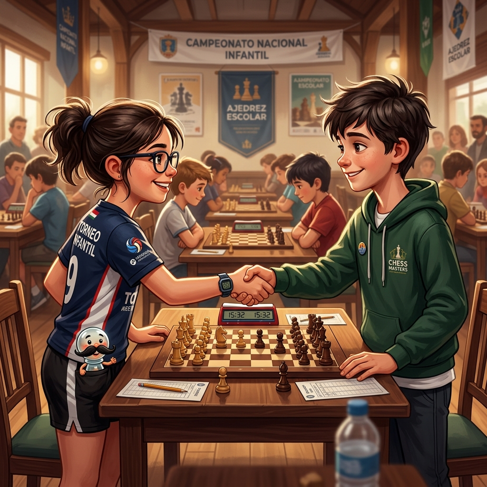

Fuego Contra Todos
Donde Martina pisa su primer torneo internacional, se enfrenta a sus dos fantasmas, y descubre que la mejor venganza es un jaque mate en el centro del tablero
♟️ Ver el contraataque ↓▶️ ¿Prefieres escuchar la historia? Clic aquí para ver el Audiolibro Animado
El polideportivo del torneo internacional no olía a piso trapeado ni a jugo de naranja. Olía a café de máquina, a concentración y a desinfectante de manos. Las mesas no eran de plástico: eran de madera. Los relojes no eran analógicos: eran digitales, con pantallas que marcaban los segundos como si cada uno fuera el último. Los jugadores no eran niños del barrio: eran adolescentes, adultos, veteranos, algún maestro internacional con canas y mirada de haber visto más tableros que días.
Y en medio de todo eso, Martina. Nueve años. Shorts de vóley. Polera de IA con ajedrez. Y una determinación tan grande que ocupaba más espacio que su mochila.
—Esto es grande —dijo su papá, mirando la sala con los ojos muy abiertos—. Muy grande. Demasiado grande. ¿Estás segura de que quieres...?
—Estoy segura.
Su papá asintió. No dijo nada más. Los padres aprenden rápido cuándo callarse. Sobre todo los padres de Martina.
Peoncito, desde el bolsillo, asomó la cabeza.
—Esto es más grande que el castillo del Rey Blanco. Y el castillo del Rey Blanco tiene siete torres. Bueno, seis. Una se la comió un dragón en el siglo XIV. Pero volvió. Las torres siempre vuelven.
—Cállate, Peoncito. Hoy es un día serio.
—Los días serios son los que más necesitan bigote. Es un hecho científico.
—Tu ciencia, tus reglas.
—Exacto.
Primera ronda. El emparejamiento apareció en la pantalla. Martina deslizó el dedo hacia abajo. Mesa 14. Blancas. Martina vs... Pablo.
Pablo. El tramposo del chicle. Los estornudos falsos. Los peones movidos «sin querer». El «no hay regla que prohíba comentar». El chicle de fresa. La sonrisa de ángel falso.
Martina sintió una oleada de frío. No de miedo. De anticipación. Como cuando ves una clavada a tres jugadas y sabes que tu rival no la ha visto todavía. Como cuando pides una empanada y sabes que viene con peón coronado. La vida te sonríe.
Se sentó en la mesa 14. Ajustó sus piezas. Pulsó el reloj. Y esperó.
Pablo llegó con la misma sonrisa, el mismo chicle, las mismas gafas de sol en la cabeza bajo techo, la misma camiseta arrugada (¿era la misma del cuento diez? ¿no la habría lavado en seis cuentos?), el mismo suspiro teatral. Abrió la boca para empezar su repertorio de excusas. Probablemente sobre otro ascensor inexistente.
—Árbitro —dijo Martina, levantando la mano.
Pablo se quedó con la boca abierta. El chicle casi se le cae.
El árbitro se acercó. Un señor de gafas con un cronómetro al cuello y expresión de haberlo visto todo.
—¿Sí?
—Quisiera que se quedara cerca de nuestra mesa durante la partida. Este jugador y yo nos conocemos. —Martina miró a Pablo—. Y sé que le gusta comentar las jugadas. Y estornudar. Y recolocar piezas «sin querer». Así que preferiría tener un testigo. Por si acaso.
Pablo enrojeció. Del color del chicle de fresa.
—Yo no... yo nunca...
—Claro —dijo el árbitro, y se quedó junto a la mesa. Con los brazos cruzados. Mirando fijamente a Pablo como quien mira un frasco de mermelada a punto de caducar.
Pablo tragó saliva. El chicle se le atascó. La sonrisa de ángel se desvaneció.
La partida fue una masacre limpia. Sin trampas. Sin ruido. Sin distracciones. Martina jugó e4. Pablo respondió e5. Martina Cf3. Pablo Cc6. Martina Ac4. Italiana. La misma apertura de la vez anterior. Pero esta vez, sin estornudos.
En la jugada seis, Martina sacrificó un peón en d4. Una trampa táctica. Una celada. De las que se estudian de noche mientras un peón con bigote te dice que estás haciendo trampa.
Pablo picó. Capturó el peón. Y entonces Martina desplegó su ataque. Caballo a g5. Dama a f3. Alfil a b5 con jaque. Las piezas blancas convergieron sobre el rey negro como una tormenta que Pablo no podía detener porque no podía estornudar. No podía hablar. No podía mover piezas. Solo podía jugar ajedrez. Y jugando ajedrez limpio, Pablo no era rival para Martina.
—Jaque mate en tres —anunció Martina en la jugada catorce—. ¿Quieres que te lo muestre?
Esas fueron las mismas palabras que Pablo le había dicho a ella en el torneo del cuento diez. Las recordaba perfectamente. Palabra por palabra. Y ahora se las devolvía.
Pablo volcó su rey sin decir nada. No había nada que decir. Sin sus trucos, sin sus estornudos, sin su chicle de fresa... era solo un niño que jugaba al ajedrez. Y contra Martina, eso no era suficiente.
Peoncito, desde el bolsillo, soltó un suspiro de satisfacción tan grande que se le despegó el bigote, rebotó en la solapa de Martina, y fue a parar justo encima del rey negro caído. Como una corona. Como un trofeo. Como si hasta los bigotes supieran quién había ganado.
—Eso —dijo Peoncito, recuperando su bigote con dignidad— ha sido mejor que cien empanadas calientes.
—Doscientas —dijo Martina.
Pablo se levantó sin decir palabra. Su chicle de fresa, abandonado en un rincón de su boca, ya no sabía a nada. Como sus excusas. Como sus estornudos. Como su sonrisa de ángel falso. Al pasar junto al árbitro, el señor de las gafas lo miró y dijo: «La próxima vez, juega limpio. Es más fácil. Y más barato. No necesitas chicle.» Pablo aceleró el paso. Quizás hacia otro torneo. Quizás hacia un espejo. Quizás hacia ninguna parte.
—Eso —dijo— ha sido mejor que cien empanadas calientes.
—Doscientas —dijo Martina.
Pasaron las rondas. Martina ganó la segunda. Ganó la tercera. Empató la cuarta contra un chico de quince años con Elo 1850 (y el empate supo a victoria). Y en la quinta ronda, el emparejamiento mostró lo que ella ya sabía que iba a pasar.
Mesa 3. Blancas: León. Negras: Martina.
León ya estaba sentado cuando ella llegó. Como siempre. Silencioso. Quieto. Las manos sobre las rodillas. La mirada en el tablero vacío. Como si estuviera jugando la partida antes de que empezara.
Martina se sentó.
—Has mejorado —dijo León, sin preámbulos—. He visto tus partidas. La del tramposo. La del Elo 1850. Estás más rápida. Más precisa. Más... tú.
—Tú también —dijo Martina—. He visto las tuyas. Sigues sin celebrar.
—Celebrar es para los que no esperaban ganar. —León hizo la pausa que siempre hacía antes de decir algo importante—. Yo siempre espero ganar. Excepto hoy.
—¿Hoy no?
—Hoy no sé. Y eso... —la pausa—... es nuevo.
León jugó e4. Siempre e4. Era su jugada. Su declaración de principios. «Aquí estoy. Voy a atacar. Defiéndete si puedes.»
Martina jugó c5. Siempre c5. Su respuesta. Su declaración. «No vengo a defenderme. Vengo a contraatacar.»
—Esto es como ver dos trenes chocar en cámara lenta —susurró Peoncito desde el bolsillo—. Pero en vez de trenes son estilos de juego. Y en vez de chocar, bailan. Es una metáfora muy mala. Lo siento. Estoy nervioso. ¿Alguien tiene otra empanada?
La partida fue la mejor que Martina había jugado en su vida. Y probablemente la mejor que León había jugado en la suya. No porque fuera perfecta —tenía errores, ambos los tenían— sino porque era auténtica. Cada jugada era una decisión. Cada captura, un riesgo. Cada movimiento, una afirmación.
León sacrificó una calidad en la jugada diecisiete. Torre por alfil. Ganó iniciativa, columna abierta, presión sobre el enroque. Martina defendió con uñas y dientes. Enrocó largo. Puso la dama en la columna c. Buscó el contrajuego en el flanco opuesto.
En la jugada veintitrés, León cometió un error. Una imprecisión. Un peón avanzado de más, que dejaba un agujero en su estructura. Martina lo vio. No al instante —León no regalaba nada al instante—. Lo vio después de quince segundos de cálculo. Quince segundos en los que el reloj corrió, su corazón corrió, el mundo corrió. Y entonces jugó.
d5.
El mismo avance que había usado en el cuento catorce. La misma jugada que entonces no fue suficiente. Pero esta vez, acompañada de un caballo en e4 y una dama en c7, era letal. El centro de León se resquebrajó.
León se quedó quieto. Más quieto de lo normal. Su mano no se movió hacia ninguna pieza. Sus ojos recorrieron el tablero una vez, dos veces, tres veces. Buscando la defensa. Buscando el recurso. Buscando la salvación.
No estaba.
León volcó su rey. Despacio. Con la misma calma con la que hacía todo. El rey blanco quedó tumbado sobre la casilla g1, mirando al cielo del polideportivo.
—Abandono —dijo.
Y entonces, por primera vez desde que Martina lo conocía, León sonrió. No una sonrisa pequeña. No un borrador de sonrisa. Una sonrisa de verdad. Amplia. Sincera. La sonrisa de alguien que acaba de perder y ha disfrutado cada segundo.
—Has ganado —dijo—. Limpiamente. Completamente. Sin trampas. Sin excusas. Sin dudas. —Hizo una pausa—. Ahora tengo un nuevo objetivo.
—¿Cuál?
—Ganarte la próxima vez.
Martina le tendió la mano. León se la estrechó. Y el apretón no fue el de dos rivales que se despiden. Fue el de dos jugadores que se reconocen. Que se respetan. Que se esperan.

—Te estaré esperando —dijo Martina.
—Lo sé. Por eso voy a entrenar más.
Después de la partida, León se quedó sentado. Como siempre. Pero esta vez, Martina se sentó a su lado.
—¿Sabes qué es lo mejor de perder? —dijo León.
—¿El qué?
—Que ahora sé que puedo mejorar. Antes no lo sabía. Ganaba siempre. Y cuando ganas siempre, no sabes si eres bueno o si los demás son malos. Pero ahora... —miró a Martina—... ahora sé que existe alguien mejor que yo. Y eso me da algo que no tenía.
—¿Un objetivo?
—Un espejo. —León sonrió otra vez—. Alguien en quien mirarme y decir: «Quiero jugar como ella. Pero a mi manera.»
Peoncito, desde el bolsillo, no pudo contenerse más.
—Perdón, perdón —dijo, asomando la cabeza con el bigote recién encerado—. ¿Puedo ofrecerte la empanada AHORA?
León miró al peón de cristal con bigote. Parpadeó. Una vez. Dos veces.
—¿Ese peón tiene bigote?
—Sí —dijo Martina—. Es una larga historia.
—¿Y habla?
—Demasiado.
—Oye —protestó Peoncito.
León se quedó en silencio tres segundos. Su pausa característica.
—Acepto la empanada —dijo.
Peoncito casi se cae del bolsillo de la emoción. Sacó la empanada —de Apertura Italiana, caliente, recién hecha por Torreta en alguna dimensión mágica donde el tiempo no existía— y se la ofreció a León con la solemnidad de quien entrega un trofeo.
León mordió. Masticó. Tragó. Y dijo:
—Está mejor que la anterior.
—Es que esta iba con peón coronado —dijo Peoncito—. Es un plus de queso.
Esa noche, de vuelta en el hotel, Martina se sentó en la cama. Su papá estaba hablando por teléfono con alguien, probablemente su mamá, probablemente contándole que su hija de nueve años acababa de ganar dos de las partidas más importantes de su vida en un mismo día. Martina no escuchaba. Estaba demasiado ocupada sintiendo.
Había vencido al tramposo. Sin trucos. Sin ayuda. Solo ajedrez. Había vencido al genio. Sin suerte. Sin errores ajenos. Solo ajedrez. Y mañana, pasara lo que pasara, jugaría otra partida. Y otra. Y otra. Hasta que el ajedrez se cansara de ella. Y el ajedrez nunca se cansaba.
En el reflejo de la ventana del hotel, una silueta de humo se removió ligeramente. No dijo nada. No necesitaba decir nada. Pero si uno se fijaba bien, la silueta tenía un cuaderno en la mano. Y en el cuaderno, la última página —la que estaba en blanco— ahora tenía algo escrito. Una sola palabra. Con letra de sombra. «Ganó.»
Y debajo, en letra más pequeña, como añadido de último momento: «Y yo que pensaba que esto del ajedrez limpio era aburrido.»
Peoncito se instaló en la almohada.
—Hoy has ganado dos veces —dijo—. Contra el tramposo y contra el genio. ¿Sabes lo que significa eso?
—¿Qué?
—Que el cuaderno se equivocaba. No había dos tipos de rivales. Había un solo tipo de Martina. Y contra eso... —se ajustó el bigote—... no hay trampa que valga ni genio que aguante.
Martina sonrió y apagó la luz.
Mañana, más. Siempre más.
Fin del decimosexto cuento.
Continuará…
🏛️ El Secreto detrás del Cuento
En la Defensa Siciliana, el avance central ...d5 representa el contraataque definitivo de las negras. Al romper el centro y quebrar la estructura de peones de las blancas, las piezas negras adquieren un dinamismo letal y abren diagonales para atacar directamente al enroque blanco. Reproduce esta famosa partida de contraataque donde la ruptura central rompe todas las defensas.